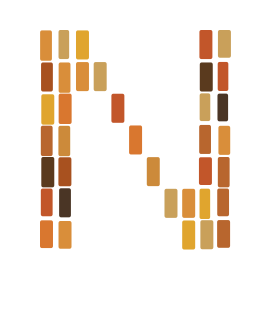

Barcelona

Ninivia no es una app de intercambio. Es el primer movimiento de lectores que comparten físicamente los libros que les han marcado. Aquí no se compra ni se vende: se confía una historia a alguien que ama leer como tú.
Un movimiento. No una app.
Hay apps para ver series, escuchar música, ver películas.
Para leer, ¿qué tienes?
Comprar libros nuevos a 20 euros, o buscar en mercadillos esperando encontrar algo que valga la pena.
Mientras tanto, en tu casa hay libros. Más de los que recuerdas. En estanterías, en cajas, en el fondo de algún armario. Libros que ya leíste y no volverás a abrir. Libros comprados con buenas intenciones. Libros que llevan años esperando.
Con Ninivia, esos libros se convierten en tu entrada a la biblioteca más grande del mundo.
Compartes los tuyos y accedes a los de miles de lectores como tú. Libros recomendados por personas reales, que puedes llegar a conocer.
Sin comprar nada nuevo. Sin pagar por leer. Solo lectores compartiendo lo que aman.
Hace casi tres mil años · Nínive
La primera gran biblioteca de la historia nació en Nínive, hace casi tres mil años. El rey Asurbanipal reunió allí el mayor saber de su tiempo: decenas de miles de tablillas de arcilla. Cuando Nínive ardió, el fuego no la borró: coció las tablillas y las guardó. Por eso, tres mil años después, todavía podemos leer la epopeya de Gilgamesh.
Asurbani, su descendiente, lo entendió: si Gilgamesh sobrevivió al fuego, una biblioteca no son sus muros. Son sus libros y sus lectores. Por eso no quiere reconstruir un edificio, sino un pueblo que comparte sus libros y, juntos, levanta la biblioteca más grande del mundo.
Cómo funciona
01
Pon tus libros en la biblioteca común. Los tuyos dan acceso a los de todos los demás.
02
Desliza libros cerca de ti. Personas con tus mismos gustos, a pocos pasos de donde estás.
03
El intercambio es físico por elección. Porque los libros siempre han unido a las personas.
04
El libro vive. Circula. No coge polvo. La biblioteca crece con cada intercambio.
Preguntas frecuentes
Sí. Subir libros, buscar, hacer match e intercambiar es gratis. Cada día tienes 10 likes, que se acumulan hasta 70. Si quieres apoyar el proyecto, puedes hacerte Amigo de Ninivia (likes ilimitados) o Fundador.
Subes los libros que ya leíste. Cuando a ti te gusta un libro de otra persona y a ella uno de los tuyos, hay match. Os escribís por el chat, quedáis en persona y os intercambiáis los libros. Después, cada uno confirma en la app que el intercambio se hizo.
Donde os venga bien a los dos, mejor en un lugar público: una cafetería, una biblioteca, una plaza del barrio. Habla siempre por el chat de Ninivia y no compartas datos personales que no hagan falta.
Claro. Si algo no te convence, en el chat pulsa «Confirmar» y elige «Decidimos no intercambiar». Sin explicaciones.
Sí, el libro pasa a ser de la otra persona y el suyo pasa a ser tuyo. Si hay un libro del que no quieres separarte, no lo marques como disponible. Estamos pensando en una forma de prestar libros, pero todavía no existe.
Al confirmar el intercambio puedes indicarlo. Nos ayuda a mantener una comunidad de confianza. Si hay un problema serio, escríbenos a hola@ninivia.com.
Nadie. Guardamos solo una ubicación aproximada (unos 100 metros) y a los demás solo les mostramos la distancia, nunca tu dirección.
Por ahora sí: empezamos barrio a barrio en Barcelona.
Los que ya leíste y no malvenderías por pocos euros: libros en buen estado que te gustaría que alguien más disfrutara.
Sí, Ninivia es para mayores de 18 años, porque los intercambios se hacen en persona. Si tienes hijos, puedes usar tu cuenta para intercambiar sus libros infantiles, juveniles o de texto: el intercambio lo haces tú.
No es una compra. Es una decisión.
Los primeros 500 lectores que apoyen el proyecto se convierten en Fundadores: tu nombre en el muro de los 500 dentro de la app, badge de Fundador en tu perfil y todas las ventajas de Amigo de Ninivia incluidas.
100€ al año, renovable. Si decides pausar, tu nombre se queda para siempre en el muro fundacional y el badge vuelve cuando regreses.
¿Prefieres algo más ligero? Hazte Amigo de Ninivia: 3,99€ al mes o 43,99€ al año.
Quiero ser Fundador: avísameTe avisaremos cuando abramos las aportaciones.
Úsala ya desde el móvil: app.ninivia.com
iPhone (Safari): toca Compartir y luego «Añadir a pantalla de inicio». Si lo abres desde WhatsApp o Instagram, ábrelo antes en Safari.
Android (Chrome): toca ⋮ y luego «Instalar aplicación».